SRx Achievement Tracker
Context
I was the sole UX Designer in building an advanced tooling system for Dr. Reddy's Laboratories' (DRL) in-house Sales Team. This project centered on the prospective SRx tracker, an advanced tool on Salesforce that would allow the salespeople and policymakers to prospect, sell, approve, and finish efficiently. This was a 0 to 1 design.
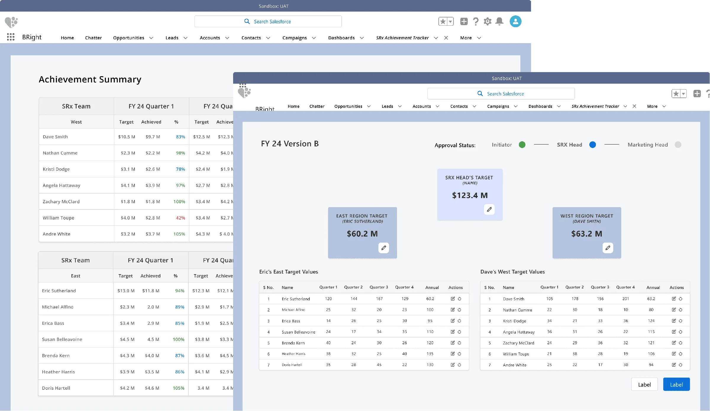
Business impact
Being able to automate and simplify the creation of sales target values as well as the tracking of sales achievements would lead to a higher revenue achieved by the sales team that is currently pulling in around $160 million annually
Problem
Dr Reddy’s Laboratories (DRL) is a globally traded company that sells billions of dollars of generic prescription drugs, yet relies on the outdated system of Excel, paper notes, and instant messages to communicate.
The lack of transparency causes the salespeople to not always be sure of where they stand within their team and can hurt the culture that the Sales Team is trying to create.
- The system is laggy for users
- Prone to human error
- Needs for better access control
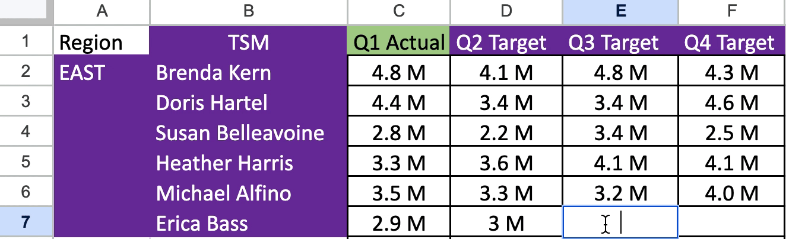
DRL needed a modernized way to track standing, quota, and achievements within the sales org, in a way that would scale as the company grew.
Constraints
- The platform, Salesforce. I had to build a solution that would live within Salesforce, and thus adopted its information architecture and base components.
- I lacked a distinct understanding of the Sales process and therefore had to do some research to figure out a couple of key items.
- What are the key data points that a salesperson needs?
- What is the average sales process like? What stages exist?
- Where did sales team members find themselves slowed down or stuck?
Research
To get my questions answered, I enlisted the help of our Regional Sales Managers who were able to walk me through their complex process. This process revealed that there were two core personas I had to target while trying to solve this problem.


Goal definition
First, we had to set our goal and ask what is it that we were trying to achieve by solving this problem for these two personas.
- Enable Regional Sales Managers and policymakers to approve targets and quotas
- Enable Territory Sales Managers to consume the Sales data themselves, and automate the tracking process
Ideation
I wanted to know exactly where the friction points lay within the user journey, which would help inform the solution.
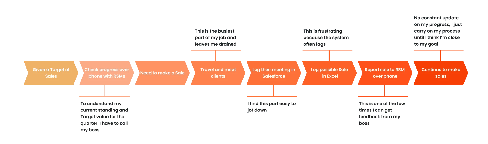
Insight: The salesperson is finding a lot of friction within the final stages of their user journey, particularly when they are logging their interactions within Excel.
Action: This led to my initial idea which was to unify Salesforce and Excel to create a dashboard for logging and viewing sales metrics on SalesForce
Our findings helped to identify features that would be beneficial to the users' needs.
-
Progress metric
A Territory Sales Manager wants to know how many planned meetings are upcoming, and how many negotiations they are currently in
-
Results metric
A territory sales manager wants to know what they have already accomplished, and what revenue markers they have hit
-
Leaderboard
Regional Sales Managers aimed to foster healthy competition among Territory Sales Managers, to build motivation and drive sales performance
-
Overall achieved targets
The territory sales managers wanted to see their achieved sales in real time
I plotted these on Salesforce and used this as an initial idea that I brought to higher fidelity.
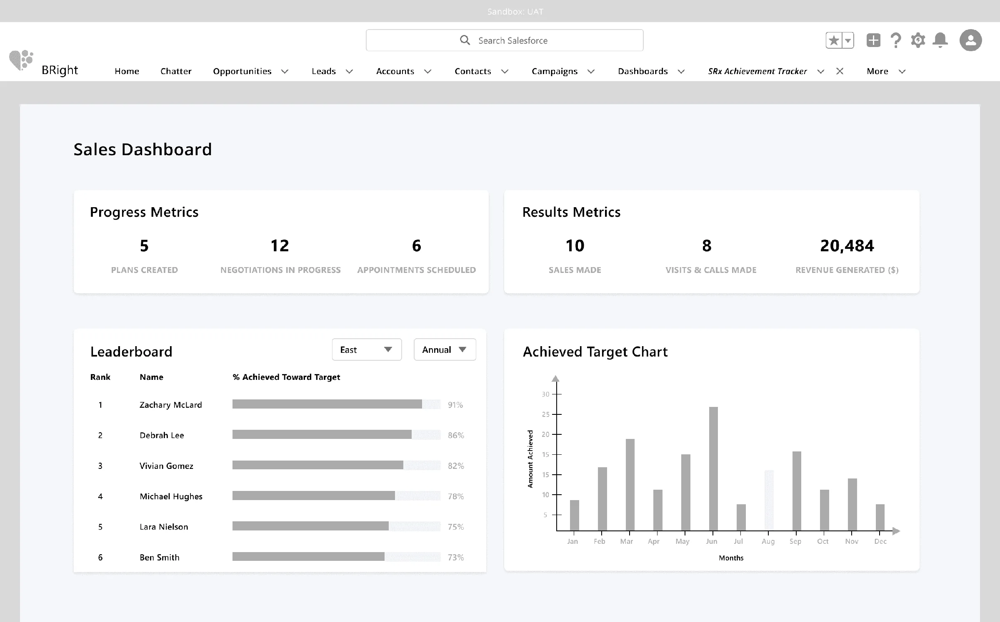
User testing 1
To validate my ideas, I conducted a set of user testing with the Regional Sales Managers to help understand if this was meeting the team's needs.
Testing our ideas showed that we were getting there, but our regional managers craved more granularity. They wanted these dashboards to be more interactive, and less of a static snapshot that could be summed up in a weekly email digest
- Key Ask 1: More interactiveness in data, and better visualizations.
- Key Ask 2: Wanted to be able to manipulate the data and add a sortable function
Iteration and Pivot: new individual pages
Based on my insights, I split each feature into individual pages, providing details on their functionalities and outlining the intended goals they seek to achieve.
I conducted user tests on these pages to get feedback and validate our concepts.
Achievement summary page
What: Sections out different regions by target quotas and achieved sales per quarter.
Why: A regional sales manager can track team’s achievements, and can create unique sales plans based on that
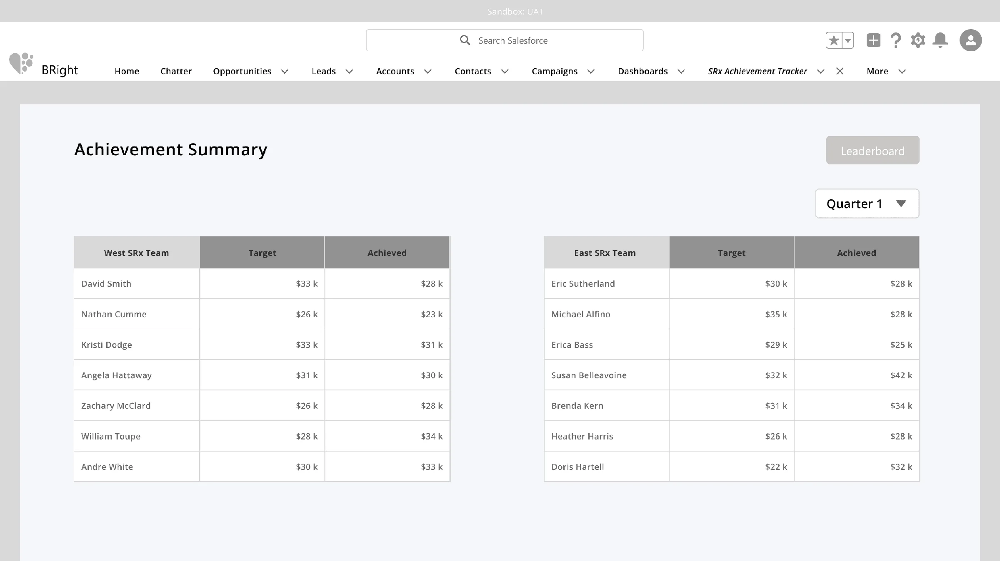
Leaderboard page
What: Displaying the performance of Territory Sales Managers relative to their peers on a Leaderboard
Why: Act as a way for Territory Sales Managers to track their performance amongst their peers and create a better Sales culture the Regional Sales Managers were looking for
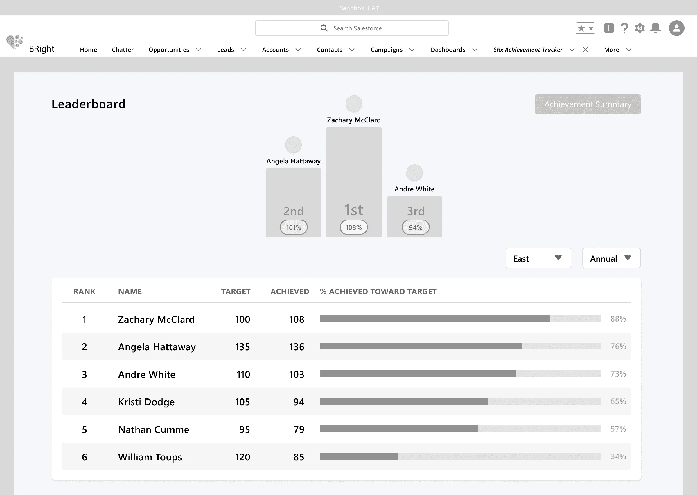
Target Value Creator Page
What: This is used by regional sales managers to set quotas for territory managers to hit.
Why: The regional manager would have a simple method of setting targets and getting them approved by higher-ups.
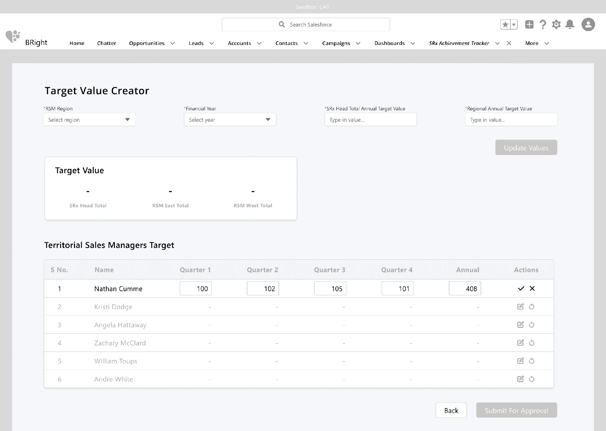
Final designs
This led me to iterate on my solutions and tighten up my visual designs. I wanted to focus on their pieces of feedback but also to run this by engineering to get LOE.
Target Value Page
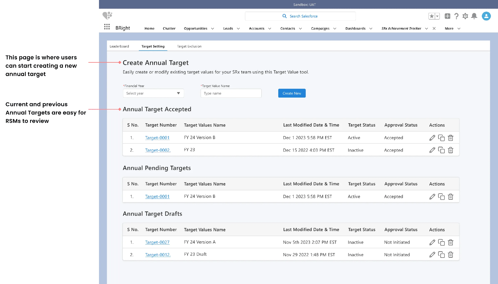
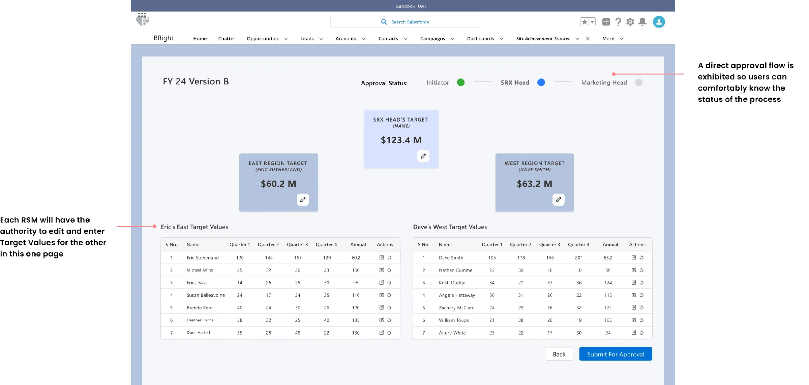
Leaderboard Page
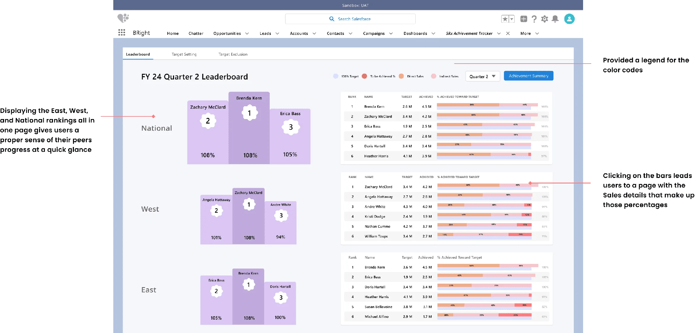
Achievement Summary Page
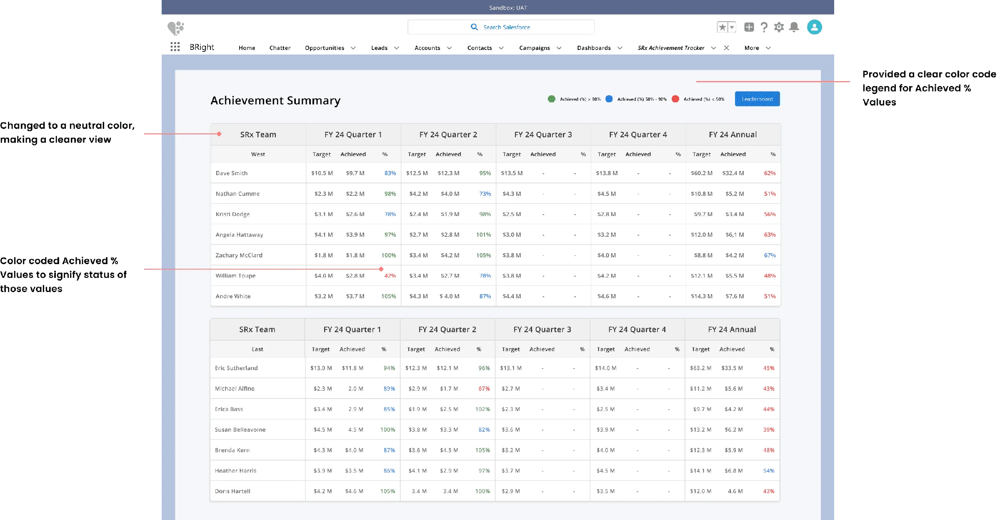
Final prototype
Impact
- 30% Less errors
- 100% User satisfaction
- 88% Decrease in approval time